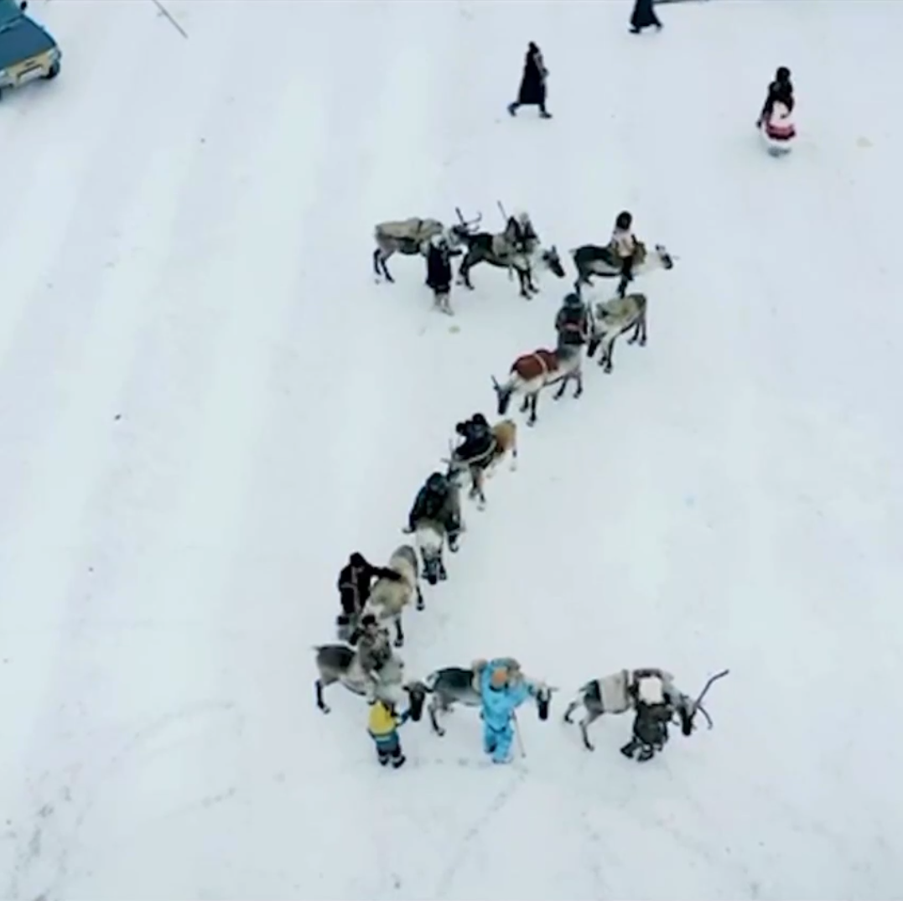

в воздухе больше чувства потерянности, непонимания и полной темноты в которой не видно даже куда делаешь следующий шаг
как в последнюю надежду родственники и знакомые начали верить в смерть этого нацгосударства и предлагать свои варианты поведения в ситуации полного распада
настал момент когда такой локальный апокалипсис - это последняя надежда. я тоже не знаю чего ещё можно ждать.
хорошо что приехал г. вокруг него спокойно и он не забывает заниматься собой и не теряется в нервном психозе как все вокруг. это хорошо
сегодня опять началась зима. чувствую как дереализация подходит со всех сторон и вокруг уже больше мало что видно. вроде бы удалось сохранить под контролем аффекты, но не получилось ли на этом фоне незаметно потерять что-то важнее? аффекты приходят и уходят, война всё спишет.
сёстры и братья! десятилетия москва и кремль угнетали нас, монополизировали возможности развития, относились к нашим родинам как к охотничьим угодьям, а к нам - как к людям второго сорта, немногие из которых "достойны" оказаться в вонючих офисах вавилона. москва присвоила бесконечные пёстрые ковры наших культур, заклеймив всё что нам дорого своим "руzzким" клеймом и продолжая наживаться на трудах и душах, делах и любви наших бабушек, наших семей, наших сестёр.
сейчас эти бесчеловечные ублюдки от нашего имени развязали акт бессмысленного и беспощадного геноцида и под прикрытием борьбы с фашизмом из последних гнилых сил пытаются выблевать фашистский режим на оккупированных территориях. и правда, москва третий рим, пятый вавилон, и недомерок вашингтона. и правда, четвёртому не бывать. империи приходят и уходят, и этой куче слизи пришла пора идти на покой, на задворки истории, становиться провинцией новых хозяев.
нас рвёт на куски от того сколько жизней эта подыхающая жаба хочет утащить с собой. мы чудом застали """"исторический""""", ха ха ха, момент, когла эту тварь можно поскорее добить. мало кто знает, что на гербе москвы изображена сама москва - как ты уже догадалась, в роли змея, который навсегда перестаёт омрачать небеса надежды народов на счастье. это пророческий герб.
чтобы спасти россию, нужно сжечь москву. теперь, к сожалению, не только и не столько россию.
самую дикую часть самого большого континента ждёт совсем неожиданное и очень странное будущее
конечно лучше избежать гражданской войны, множества мясорубок гражданских войн на долгие декады, но как это сделать - никто не знает.
27_03_2022_0222